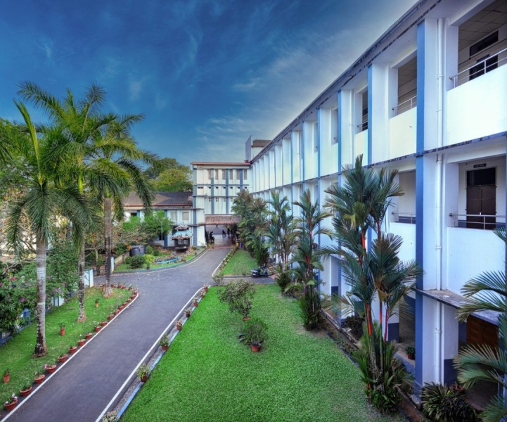

|  |
Welcome To Nirmala College.
Established in 1953, Nirmala College, Muvattupuzha is a first-grade college affiliated to Mahatma Gandhi University, Kottayam. It is a minority Christian institution governed and managed by the Corporate Educational Agency, Syrian Catholic Diocese of Kothamangalam. In strict compliance with the vision of the founding fathers, the college has served the community, irrespective of caste, creed and colour and has contributed to the world quite large a number of value-based Nirmalites. Her performance in academic and non-academic activities has been acknowledged by the NIRF rankings 2017 in the form of its position on the 91st among the list of colleges in the country. In addition, the college has been bestowed with the prestigious ‘Star College’ status by the Department of Bio-Technology (DBT), Government of India, in recognition of the advancements made by the college in the field of science education, with a handsome financial grant. All science departments of the college are supported by the DST- FIST scheme. |